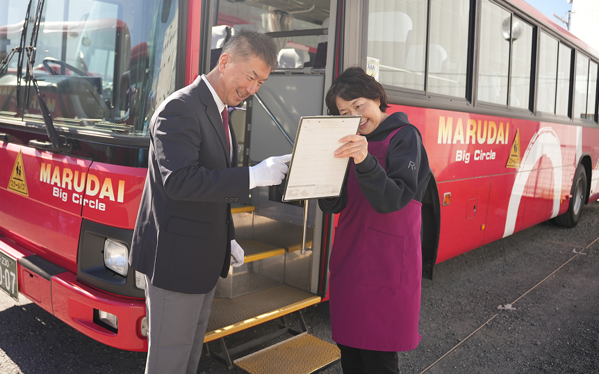
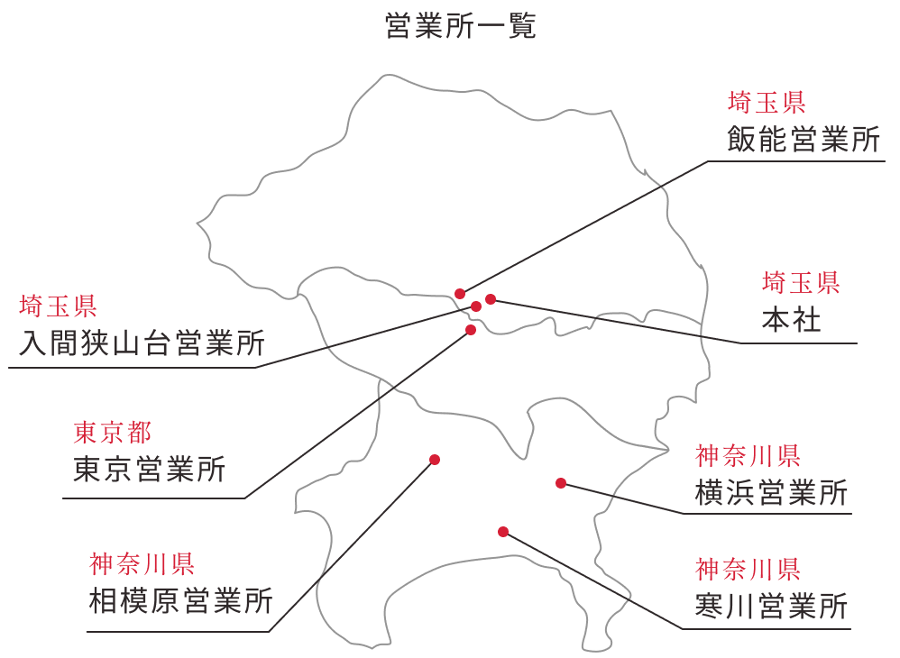
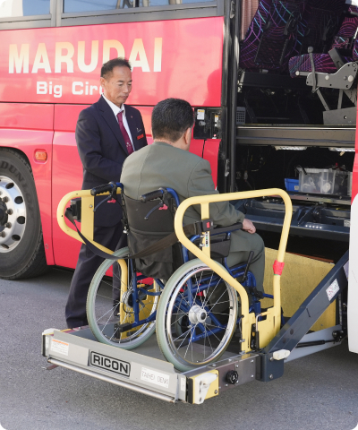
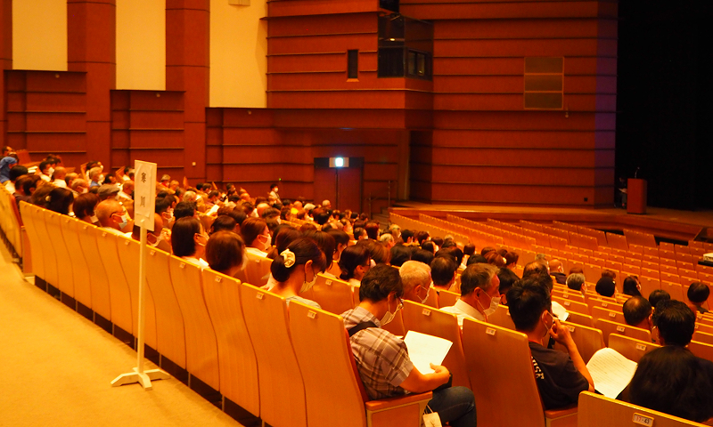

school bus
特別支援学校
スクールバス
What is?
特別支援学校のスクールバスとは？
特別支援学校とは、障がいのあるお子様へ、幼稚園～高等学校に準ずる教育をするとともに、障がいによる学習・生活上の困難を克服し、自立を図るために必要な知識・技能を身に着けることを目的とする学校です。
特別支援学校の生徒様の中には、障がいにより独力で学校に通うことが難しい方もいらっしゃいます。そのため、そのような生徒様が学校へ通いやすいように運行されているのが、特別支援学校のスクールバスです。

関東最大級の特別支援学校送迎
私たちは特別支援学校の送迎バスを約20年前から始め、現在では1都(東京都)2県(埼玉県・神奈川県)で約120台、毎日運行しています。
運行年数・運行台数で今や「関東最大級の事業者」であることに責任を持ち、安全を第一に、これからも生徒様の教育の機会を守っていきます。

- Contributing to Society throughPassenger Transport Business
- Contributing to Society throughPassenger Transport Business
- Contributing to Society throughPassenger Transport Business
Why?
当社が特別支援学校スクールバスに
尽力している理由

安心して通学していただくための取り組み
様々な研修
春季研修の様子
当社では、安全な運行を行うため、多くの研修を行っております。
QRだれドコの導入

フルティフル合同会社様のサイトに当社の記事が掲載されました。
降ろし忘れ事故撲滅のため、一部コースで、ＱＲコードで乗降を確認するシステム「ＱＲだれドコ」(フルティフル合同会社)を導入いたしました。